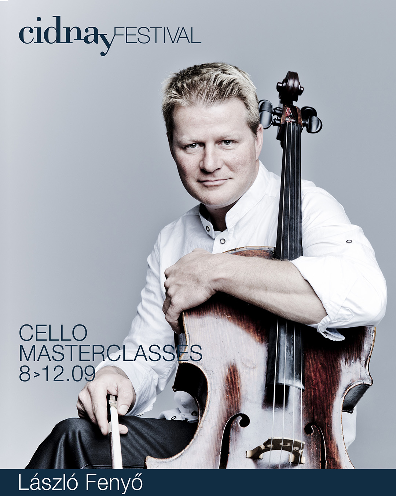
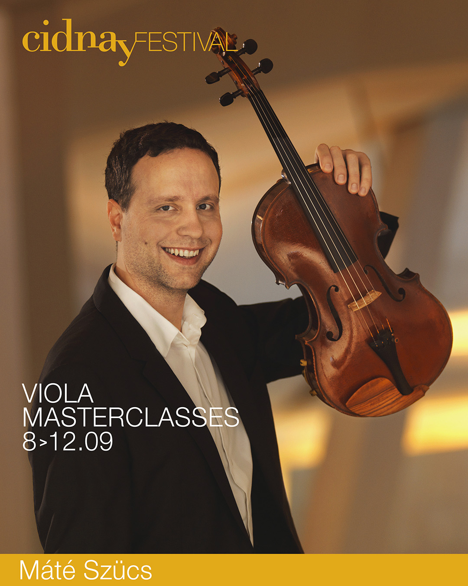

ACADEMY FACULTY 2024
_____

Born in 1975, László Fenyő has belonged to the world elite of cellists since he won the International Pablo Casals Contest of 2004 in Kronberg, Germany. He is hailed as one of today’s most exciting artists by his audience and critics. Possessing the unique capability of presenting the intentions of the composer, he captures and fascinates his audience. Through his breathtaking technical skills and emotive expressiveness, his concerts become special experiences, where the music can be newly explored with each concert.
In the last few years László Fenyő has performed on the most renowned stages throughout the world, including the Concertgebouw in Amsterdam, Wigmore Hall in London or the Gasteig in Munich. He has been soloist with orchestras such as the Singapore Symphony Orchestra, the Korean Symphony Orchestra, the Frankfurt Radio Symphony Orchestra (hr- Sinfonie Orchester), the Beethoven Orchester Bonn, the Staatskapelle Weimar, the Philharmonia Hungarica, the Orquestra Metropolitana de Lisboa, the Lancaster Symphony Orchestra, the Shanghai Symphony Orchestra, the Christchurch Philharmonic Orchestra, the Bogota Philharmonic Orchestra, the Sofia Philharmonic Orchestra and the Sinfonietta Cracovia. He has performed many times with conductor Krzysztof Penderecki.
In Hungary, his home country, László Fenyő has long been one of the most sought after soloists; his performances – solo recitals, chamber music events and concerts with orchestras, are broadcast live and recorded by the Hungarian Radio. He has played with most Hungarian orchestras and conductors. In addition, in 2005 he received the highly coveted Franz Liszt Prize awarded by the Hungarian Ministry of Culture, as well as the Junior Prima Prize in 2008.
László Fenyő began his musical education in Hungary. Already at the age of 13 he became a junior student with Professor László Mező at the Franz Liszt Academy of Music in Budapest. Later, while continuing his studies in Lübeck with Professor David Geringas, his brilliant technique, secure sense of style, and his unusually broad repertoire, brought him several prizes at important competitions. Among them, the International Music Contest in Geneva, the Rostropovich Contest in Paris, the Adam Cello Contest in Christchurch, and the Contest of the Hungarian Radio in Budapest. After completing his studies, he decisively extended his musical horizons under the tutelage of Bernard Greenhouse.
László Fenyő gives master courses all over the world, from 2009 until 2011 he was a lecturer at the Academy of Music and Fine Arts in Frankfurt and from April 2012 he teaches as a professor at the Musikhochschule Karlsruhe. László Fenyő has been principal cellist of the Philharmonia Hungarica 1998-2001 and of the Frankfurt Radio Symphony from 2001 until 2012.
The CD´s, which he recorded and released in the past few years, are „Gloria“ by Sony with Gábor Boldoczki and Hedvig Bilgram, chamber music with pianist Oleg Poliansky by Aulos/Musikado, and the cello concertos of J. Haydn (D Major) and D. Shostakovich (No. 1) accompanied by the hr-Sinfonieorchester (Frankfurt Radio Symphony Orchestra), conducted by Grant Llewellyn, as well as an Enjott Schneider Portrait-CD with the German Radio Orchestra Berlin and Ariel Zuckermann.
László Fenyő plays a cello made by Matteo Goffriller from 1695.
_____

Hungarian born violist Máté Szücs has had a career as an award winning soloist, chamber musician and orchestral player.
Máté was principal viola in the Berlin Philharmonic Orchestra from 2011 to 2018 where he also appeared as a soloist playing the Bartók Viola Concerto in September 2017.
Máté was seventeen when he switched from the violin to the viola and graduated from the Royal Conservatory of Brussels and the Royal Conservatory of Flanders in Antwerp with the highest distinction. He further undertook a session at the Chapelle Musicale Reine Elisabeth in Waterloo, Belgium where he obtained his diploma, also with the highest distinction.
Máté was eleven when he won the Special Prize of the Hungarian Violin Competition for Young Artists. Not much later he won First Prize of the Violin Competition of Szeged (Hungary) and the First Prize for the Best Sonata Duo of the Hungarian Chamber Music Competition. Since then, he has won First Prize at the International Violin and Viola Competition in Liège in Belgium, as well as finalist of the International Viola Competition “Jean Françaix” in Paris and Laureate of the International Music Competition “Tenuto” in Brussels.
As a chamber musician, Máté has been a member of various chamber ensembles including the Mendelssohn ensemble; Con Spirito piano quartet, Trio Dor, Enigma Ensemble and “Fragments” ensemble. He has worked with prominent musicians such as Janine Jansen, Frank-Peter Zimmermann, Christian Tetzlaff, Vadim Repin, Ilja Gringolts, Vladimir Mendelssohn, László Fenyő, Kristof Baráti and István Várdai, Camille Thomas, Kirill Troussov and Julien Quentin.
In addition to performing solo with the Berlin Philharmonic, he has soloed with orchestras such as the Royal Philharmonic Orchestra of Flanders, the “Bamberger Symphoniker”, the “Sächsische Staatskapelle Dresden”, the Frankfurt Radio Orchestra and at the “Deutsche Kammerphilharmonie Bremen”., where he was as well principal viola.
Máté is also a sought after pedagogue. Since the summer of 2006 he has been a regular professor at the “Thy Masterclass” chamber music summer festival in Denmark and between 2012 and 2014 was also teaching at the Britten-Pears Festival in Aldeburgh, England. He has taught two years at the University of Music in Saarbrücken, between 2014 and 2018 at the Karajan Academy of the Berlin Philharmonic Orchestra, between 2015 and 2018 at the “Hanns Eisler” University of Music in Berlin and between 2015 and 2016 the Music Academy of Budapest.
Máté gives masterclasses all over the world including New York, Los Angeles, Michigan, London, Berlin, Brussels, Shanghai, Taipei, Seoul and Tokyo.
Since 2018, he has been the Professor of Viola at the Geneva University of Music in Switzerland.
In 2020 he got his PhD Diploma and became Doctor of Arts.